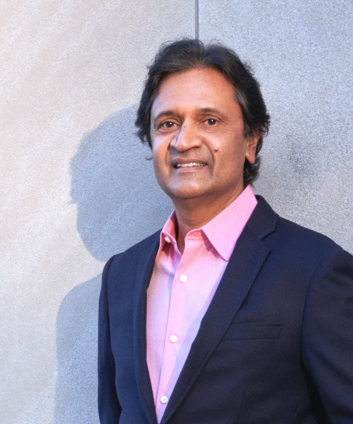
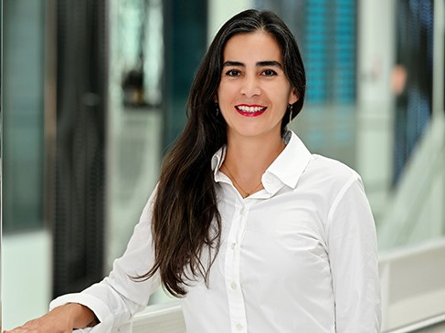
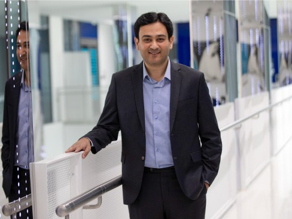

CVIP 2026 is honored to host world-renowned experts who will share their insights on computer vision, image processing, and deep learning.

Columbia University , USA
Shree K. Nayar is the C. Chang Professor of Computer Science at Columbia University. He heads the Columbia Imaging and Vision Laboratory (CAVE), which develops computational imaging and computer vision systems. His research is focused on three areas - the creation of novel cameras that provide new forms of visual information, the design of physics-based models for vision and graphics, and the development of algorithms for understanding scenes from images. His work is motivated by applications in the fields of imaging, computer vision, robotics, computer graphics and human-computer interfaces.
University of North Carolina at Chapel Hill, USA
Dr. Xiaoming Liu is a Distinguished Professor in the Department of Computer Science at the University of North Carolina at Chapel Hill, USA. His research focuses on computer vision, machine learning, biometrics, and trustworthy AI, with particular emphasis on face analysis, 3D vision, and deep learning. He has authored more than 200 scientific publications in leading journals and conferences in computer vision and pattern recognition. Dr. Liu is a Fellow of IEEE and the International Association for Pattern Recognition (IAPR), recognized for his significant contributions to biometrics and computer vision research.
Indian Institute of Science (IISc), Bengaluru, India
Prof. R. Venkatesh Babu is a Professor and Chair in the Department of Computational and Data Sciences at the Indian Institute of Science (IISc), Bengaluru, India. His research focuses on computer vision, machine learning, video analytics, and multimedia processing. He leads the Vision and AI Lab at IISc and has made significant contributions to areas such as image/video analysis and deep learning. Prof. Babu received his Ph.D. from IISc and has previously held research positions at institutions including NTNU (Norway), INRIA (France), and NTU (Singapore).
Indian Institute of Technology, Delhi, India
Tapan K. Gandhi is Professor, Department of Electrical Engineering at Indian Institute of Technology Delhi and Cadence Chair Professor in Artificial Intelligence & Automation Trustee, Project Prakash Charitable Trust. His research focuses on computational neuroscience, biomedical signal and image processing, artificial intelligence, machine learning, and assistive technologies. He obtained his Ph.D. in Biomedical Engineering jointly with IIT Delhi and the Massachusetts Institute of Technology (MIT).Dr. Gandhi has contributed extensively to interdisciplinary research in healthcare technology and brain-inspired computing.

Mohamed bin Zayed University of Artificial Intelligence (MBZUAI), UAE
Dr. Thamar Solorio is a Professor of Natural Language Processing at Mohamed bin Zayed University of Artificial Intelligence (MBZUAI), UAE. She is widely recognized for her contributions to natural language processing, machine learning, and computational linguistics, with a particular focus on multilingual language processing, code-switching, authorship analysis, and social media text understanding. Her research explores the development of robust and inclusive language technologies that can effectively handle diverse linguistic phenomena, especially in low-resource and mixed-language settings. Dr. Solorio has led several impactful research initiatives in areas such as author profiling, deception detection, and computational analysis of online discourse. Prior to joining MBZUAI, Dr. Solorio was a Professor of Computer Science at the University of Houston (UH),USA and the Director and Founder of the RiTUAL Lab at UH. She has authored numerous high-impact publications in leading NLP and AI conferences and journals. Dr. Solorio has received several awards and recognitions for her research contributions and leadership in the NLP community. Her work continues to advance the development of inclusive AI systems capable of understanding complex human language in real-world scenarios.

Mohamed bin Zayed University of Artificial Intelligence (MBZUAI), UAE
Prof. Fahad Shahbaz Khan a Full Professor and Deputy Department Chair of Computer Vision at Mohamed bin Zayed University of Artificial Intelligence (MBZUAI), UAE. His research focuses on core areas of computer vision, including object recognition, detection, segmentation, tracking, and action recognition, with a particular emphasis on learning visual models under limited human supervision. Prior to joining MBZUAI, he was a Lead Scientist at the Inception Institute of Artificial Intelligence (IIAI), Abu Dhabi. He also held research positions at the Computer Vision Laboratory, Linköping University, Sweden, where he later received the prestigious Docent title in computer vision. Prof. Khan has made significant contributions to the field, consistently achieving top ranks in major international computer vision challenges such as Visual Object Tracking (VOT), VOT-TIR, OpenCV Tracking, and PASCAL VOC. He has authored over 100 scientific publications with more than 75000 of citations.